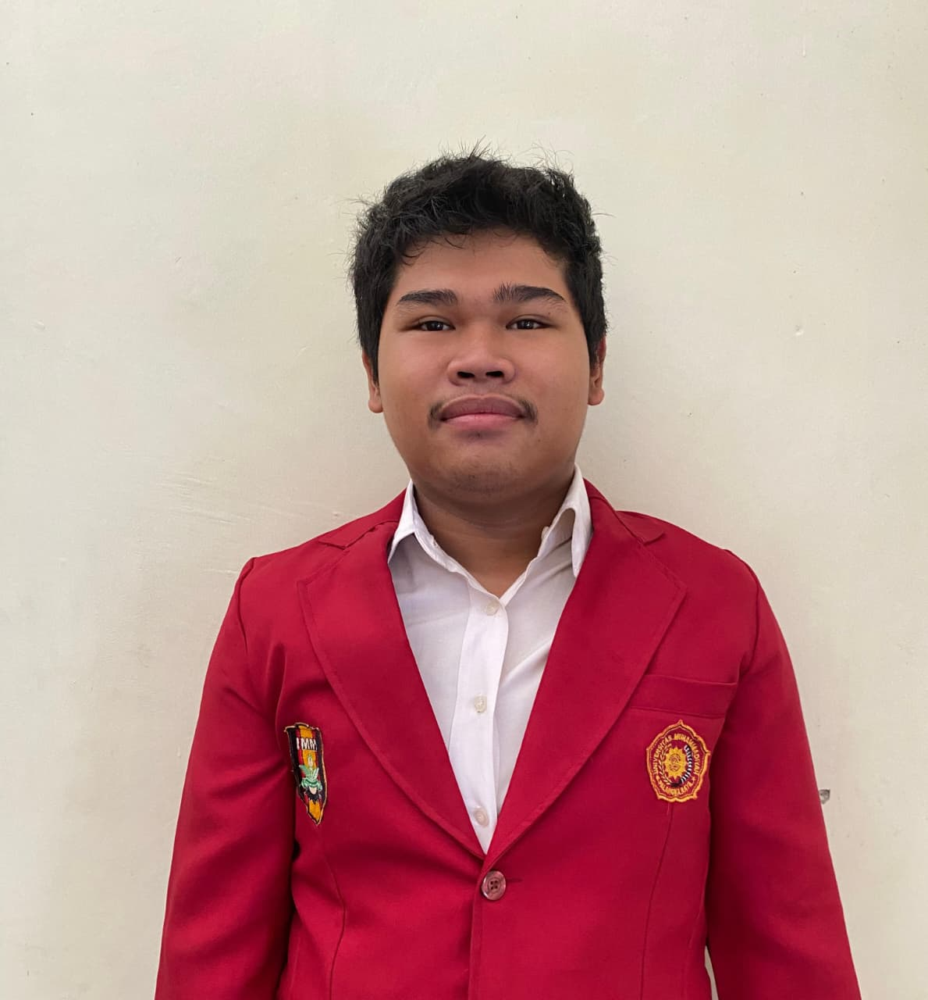

WEBSITE TUGAS 3 KOMPUTASI AWAN
Perkenalkan, saya Nopendry Ilham Setyady, mahasiswa Program Studi Ilmu Komputer. Website ini dibuat untuk memenuhi tugas mata kuliah Komputasi Awan.
Pelajari Materi
Nama: Nopendry Ilham Setyady
NIM: 23.53.027370
Program Studi: Ilmu Komputer
Universitas: Universitas Muhammadiyah Palangkaraya
Mata Kuliah: Komputasi Awan